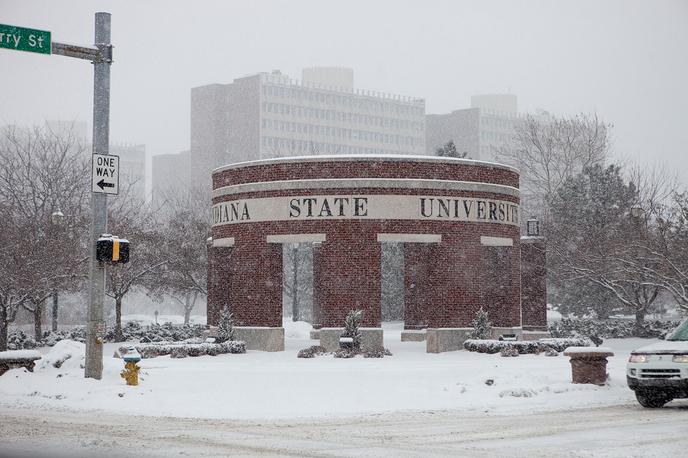

Hi! I am a second year Ph.D. student studying Computer Science at the University of Miami. My research lies in Computer Vision. Under the supervision of Dr. Ubbo Visser within the RoboCanes research group, I'm working towards understanding how RL can be used within a simulated environment inorder for a robot to accomplish certain tasks. From learning how to kick a ball as it approaches, to formulating coordinated strategies amongst team members to win a game of scoccer.
In May 2017, I completed my Master's in Computer Science at Indiana State University. My final research project focused on Decision Tree Learning. I developed the ID3 algorithm from scratch using Python and explored how concepts such as Gain Ratio and Random Forests can be used to improve the running time. I was advised by Dr. László Egri.
In 2013, I received my Master of Physics (MPhys) degree in Theoreical Physics Honours from Lancaster University. My research was focused on understanding the mathematical formalism of Quantum Field Theory and investigating its application in the context of cosmology. My research advisor was Dr. Anupam Mazumdar.
I am thankful to those who said NO to me. It's because of them I did it myself.- Albert Einstein.
